San Antonio, Zambales used to be a small quiet fishing village until the Internet discovered the beautiful Anawangin Cove.
While it’s not the only Zambales tourist spot there is, Anawangin surely is the most popular (and most beautiful) attraction, at least for us.
If you’re someone who fancies white sand beach, quiet and relaxing ambiance, simple way of living, no Internet, just you and nature, then Anawangin will not disappoint you. This cove is not like any other.
How to get there:
To get to Anawangin from Cubao, ride a Victory Liner bus going to Iba, Zambales and alight at San Antonio Public Market.
Alternatively, you may also travel by bus to Olongapo City, and then board another bus to San Antonio. Upon arrival at San Antonio, take a tricycle to Pundaquit and rent a boat to Anawangin beach.
Travel time: 4-5 hours
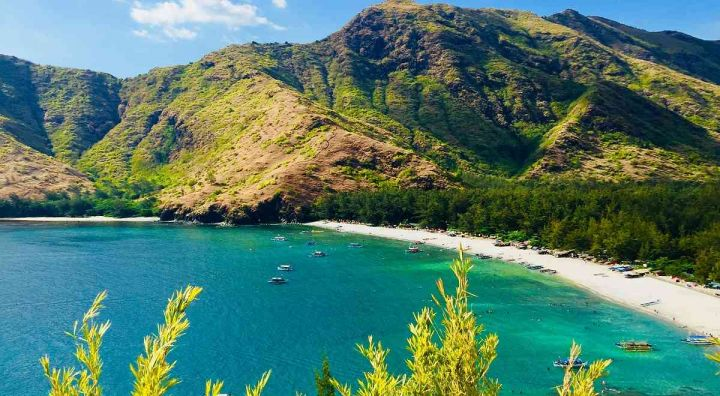
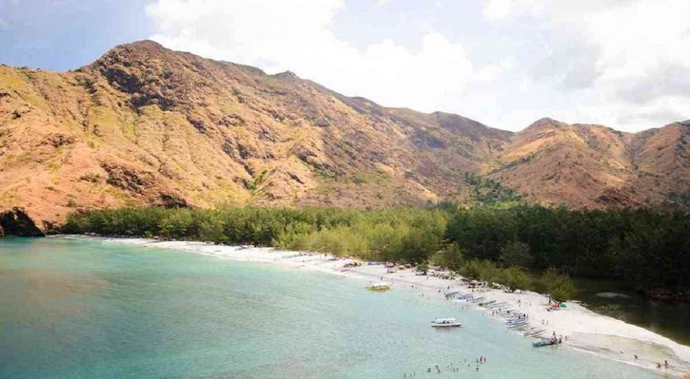
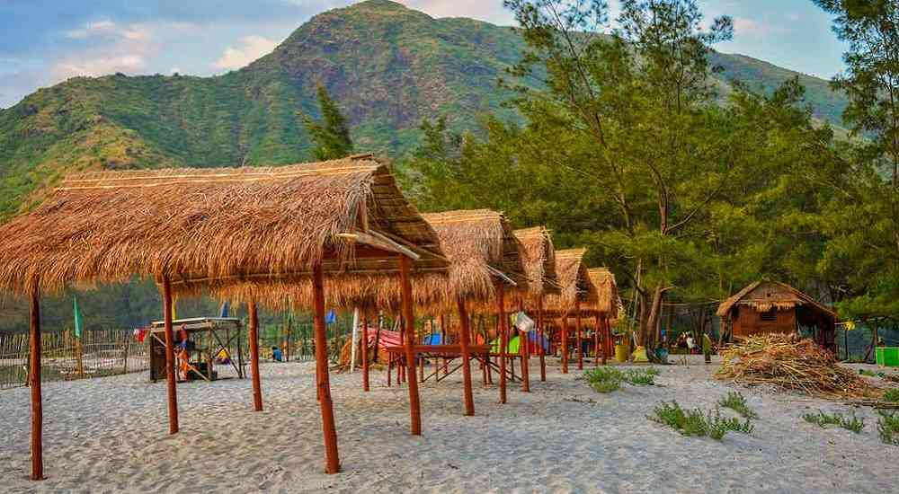
D.R.T (Doña Remedios Trinidad Bulacan) is the largest municipality in Bulacan, covering nearly one-third of the total land area.
Located on the southern edge of the Sierra Madres Mountains, it contains three main conservation areas: Angat watershed forest reserve, Biaknabato National Park, and Doña Remedios–General Tinio Material Forest Reserve,327.3 km² isolated and disposable public land.
Why is this place called DRT?
On September 13, 1977, Philippine President Ferdinand Marcos issued Presidential Decree No. 1196 creating the municipality of Doña Remedios Trinidad.
The municipality of Doña Remedios Trinidad was named in honor of Doña Remedios T. Romualdez, mother of then First Lady Imelda Romualdez Marcos, who was a Bulakeña from the town of Baliuag Bulacan.
The municipality covers seven barangays, originally part of Angat, Norzagaray, and San Miguel. These are Pulong Sampaloc and Camachile of Angat; Bayabas and Kabayunan of Norzagaray; Talbak, Camachin and Kalawakan of San Miguel.
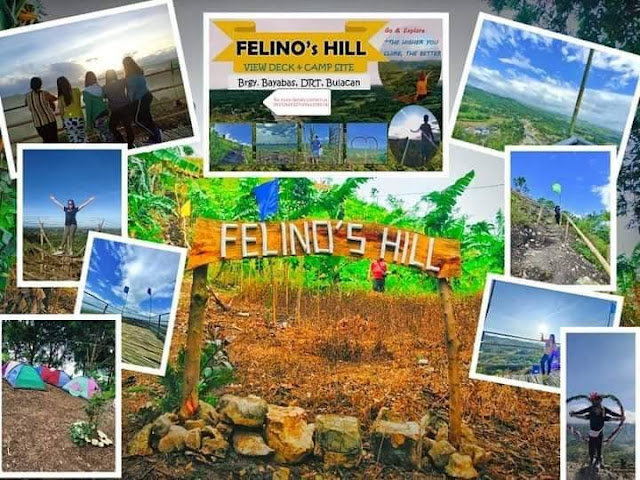
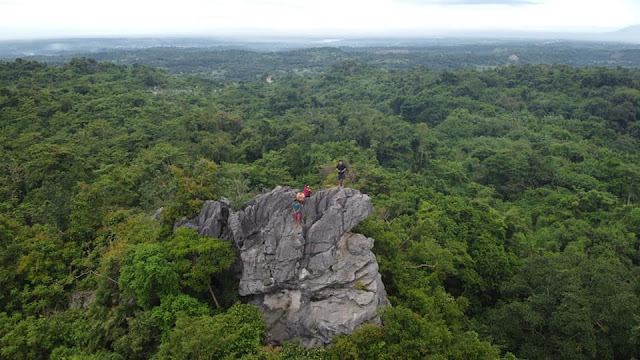
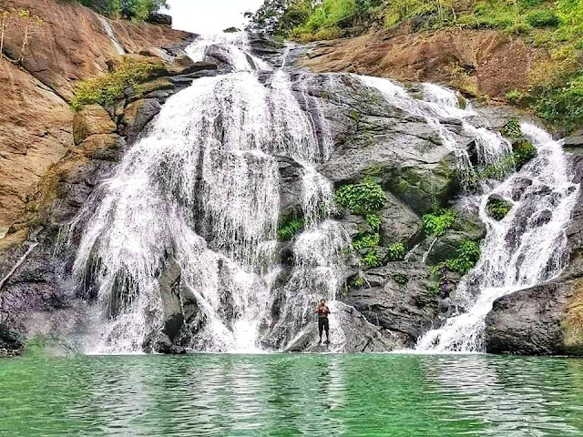
Tagaytay City is always on top of the list of weekend destinations for city dwellers. It's known for its stunning views, gastronomic food trips, and family-friendly activities.
When it comes to a quick escape from Manila, Tagaytay City is an easy choice. Its proximity makes it a default destination for the work-weary weekend warriors from Manila and other parts of Cavite, as well as the neighboring provinces of Laguna and Batangas.
Despite being just 2-3 hours away from the Philippines’ capital, Manila, Tagaytay has cooler weather. It has an average lowest temperature of 18.8 °C (65.84 °F) compared to other parts of the Philippines with an average lowest of 26.6 °C (79.9 °F). This is why visitors keep coming back, happy to get their fill of the fresh and cool mountain air.
Families with young kids and big groups looking to have a fun-filled stay are also in for a treat as there are multiple tourist attractions that kids will love. Tagaytay is also one of the popular day trip destinations in Manila.
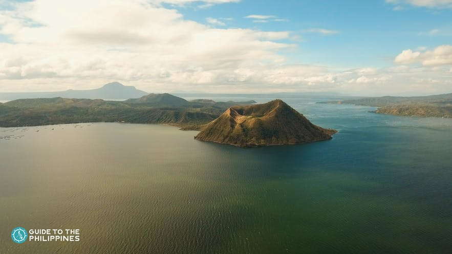
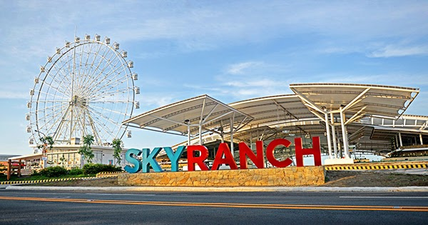
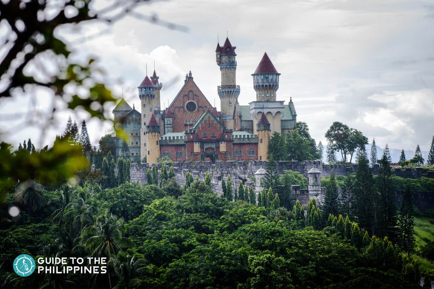
Mt. Ulap is a beautiful and scenic landscape that represents much of what the Cordillera is. It’s a climb you could consider, especially that Pulag is now overly crowded. (Honestly, I wanted the authorities to implement a recovery period for Mt. Pulag to preserve the National Park). Nevertheless, Mt. Ulap is surprisingly a surreal view as well. With grassland summits, pine ridges, and an open view of the other Cordillera mountains, it’s a climb one must have to experience more of the Cordilleras.
HOW TO GET THERE
To Ampucao:
From Baguio City, ride a jeepney going to Ampucao. The terminal is located near Center Mall (everyone knows where this mall is – I’m a Baguio local so I know). Fare is 50php.
Tell the driver to drop you off Barangay Ampucao. Normally, they’d drop you on the waiting shed here with a sign “Mt. Ulap Registration this way”, but sometimes the driver could take you inside the registration area as well.
Just follow the signs to the registration area (probably take you just 3minutes to get there).
Register and pay your guide fee (400php per group) and environmental fee (100php ea).
****Note: You could opt to start your trek from here or from the exit point (inform your guide) by riding a jeepney to the exit point (20php – 20 min ride). It’s a much steeper climb from there going back to jump off point at Ampucao
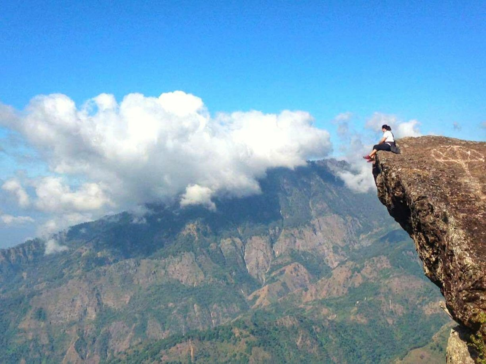
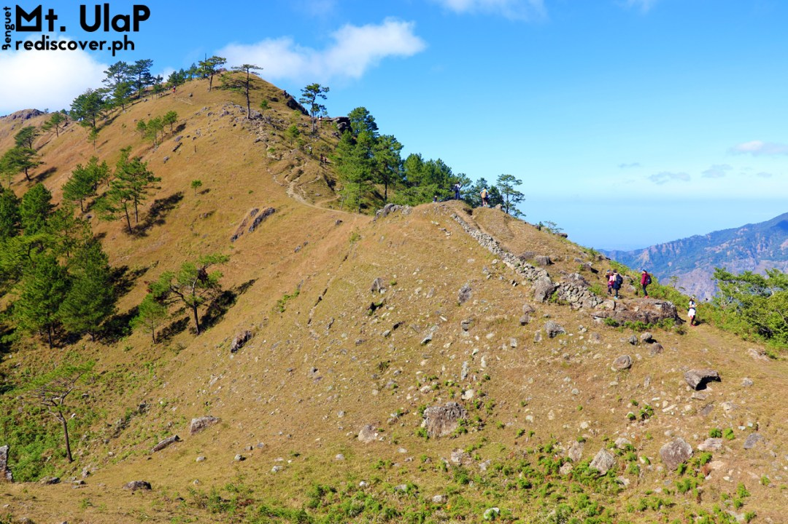
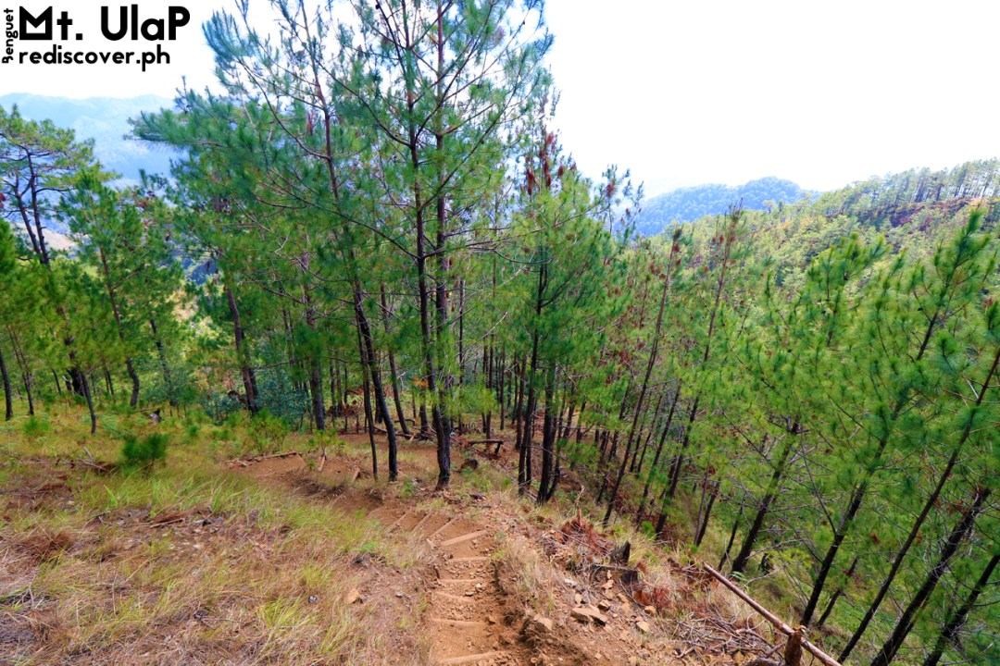
Batanes’ refreshingly chill and peaceful vibe gives local and foreign travelers a different taste of island life. One that is simpler, laidback, quiet, but definitely revitalizing.
For a country that is known for its tropical islands, Batanes’ rock formations, quaint lighthouses, and wild horses that roam freely in vast pastureland make it a truly unique destination for many people.
If you’re planning a trip to this part of the Philippines, we offer you this ultimate guide on everything you need to know for the perfect getaway.
The best time to visit Batanes is during the dry or summer season. In the Philippines, the months of March, April, May, and June are considered the hottest months with minimal rainfall. These are also the best months to visit Batanes.
Fewer chances of rainfall mean fewer chances of delayed or canceled flights and you’ll be able to enjoy your trip better since Batanes tourist attractions are mostly outdoors.
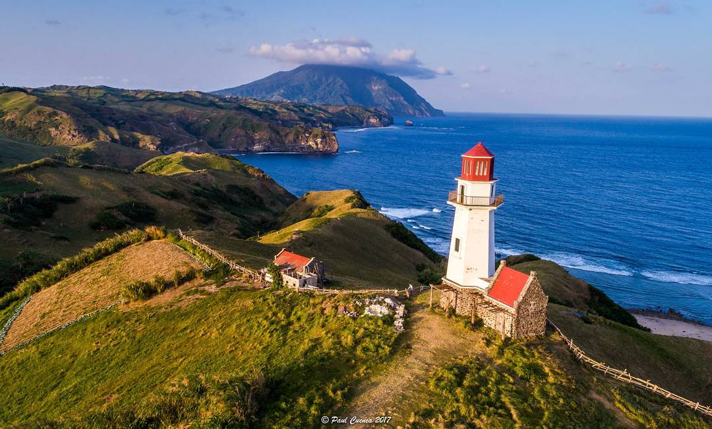
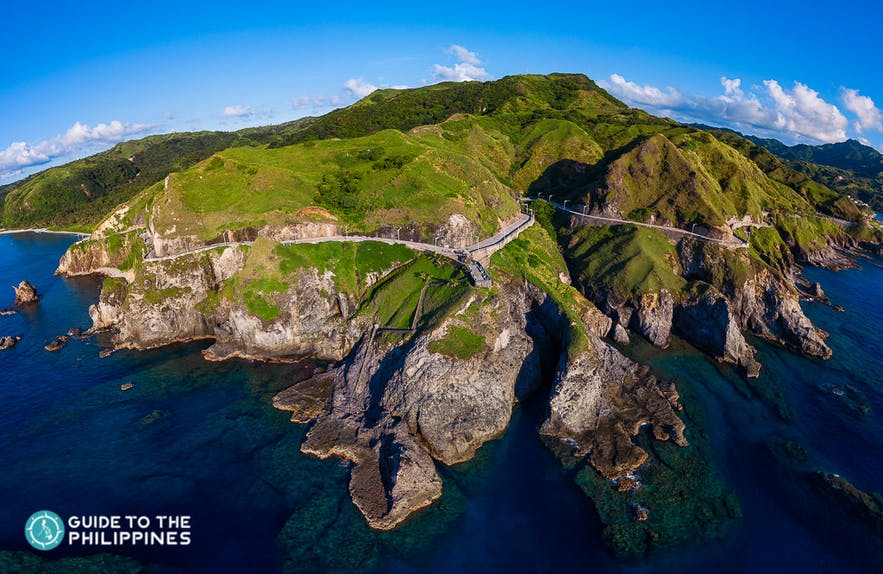
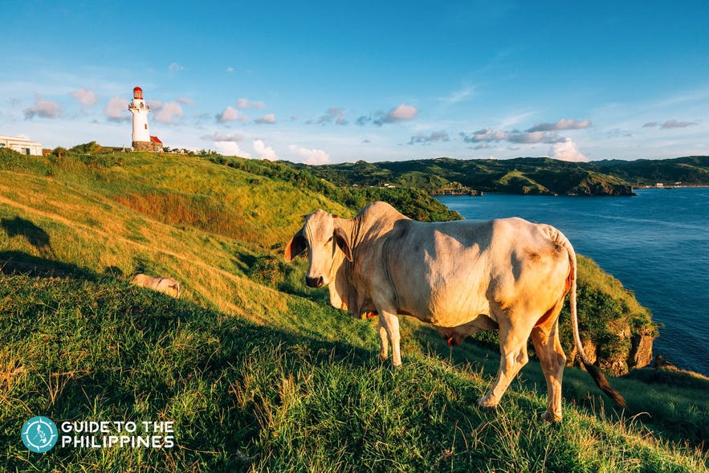